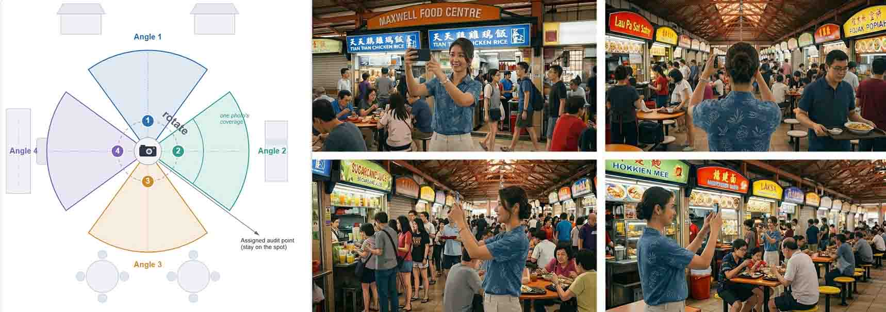

A mobile-first fieldwork platform for capturing human activities, pedestrian flows, and spatial quality in indoor public buildings — purpose-built for urban researchers.
Indoor public spaces — libraries, transit concourses, civic halls, shopping atria — are critical sites of urban social life, yet systematic fieldwork tools for studying them remain scarce. This platform was developed to support structured behavioral observation, pedestrian flow counting, spatial concept mapping, and route-based environmental quality scoring, all from a researcher's mobile phone on site.
Each module targets a distinct layer of how people inhabit and move through public indoor space. Use them independently or in combination during a single fieldwork session.
Pin individual or group activities on an indoor floor plan. The most comprehensive data-collection module.
Count bidirectional pedestrian flow at corridors and entrances. Draw a counting line on the floor plan and tally each pass in real time.
Drop categorized idea pins on the floor plan to annotate spatial concepts during or after fieldwork.
Walk and rate a predefined route through the space. Score environmental qualities at each waypoint to build a spatial quality profile.
These tools are accessible from the Capture screen toolbar during any session. They let researchers attach richer context without leaving the map view.
Capture a quick photo or typed note about anything on site. Stored separately from structured activity records for later qualitative analysis.
Quick CaptureLaunch a structured multi-step questionnaire for a visitor you intercept on site. The response is automatically linked to recently saved activity records.
Person QuestionnaireUses the device's GPS to auto-place your current position on the indoor floor plan. Requires a GPS-to-map calibration file configured per building.
Auto-LocateOverlay named Points of Interest on the floor plan. POIs with associated photos open an image preview — useful for contextualising key spatial features.
Points of InterestScore spatial quality attributes at any location on the floor plan. Rate dimensions such as comfort, safety, legibility, and activity support in real time.

Follow a pre-defined route through the space with sequenced waypoints. The app guides the researcher stop by stop, prompting observations at each designated location.
Each module shares the same map-based interface. The Capture module is the most common starting point — a full session takes under a minute per record.
Choose the site from the dropdowns at the top of the screen to load the floor plan.
Tap End Capture (toggle) to begin — the button turns active and the map becomes tappable.
Touch the floor plan where the activity is taking place to drop a pin and open the form.
Set individual/group, activity category & type, gender, age, ethnic group, and facial expression.
Add a site observation photo or note via the toolbar for richer qualitative data.
Tap Save Record. The pin appears on the map and data is immediately stored on the server.
The app is built with Django (Python) and plain HTML/CSS/JavaScript — no heavy frontend framework. The codebase will be publicly available on GitHub.
Django · Python · Mobile-first HTML/CSS · Azure Web App · PostgreSQL · Azure Blob Storage